processQFeatures App
Léopold Guyot
Loïc Guille
12 May 2026
Source:vignettes/processQFeatures.Rmd
processQFeatures.RmdStart the app
Parameters of the shiny application :
qfeatures: a QFeatures object this can be either a path to an rds file or a QFeatures object already loaded in your R session.prefilledSteps(optional): define the different steps of the workflow use to analyze the QFeatures object, accepted values aresampleFiltering,featureFiltering,normalisation,missingValuesFeatures,missingValuesSamples,zeroToNA,logTransform,imputation,aggregationandjoin. The suggested workflow set as default value issampleFiltering,featureFiltering,missingValuesFeatures,missingValuesSamples,normalisation,aggregation,joinandaggregation.initialSets(optional): Sets to use for the analysis of the QFeatures object. Default is set toseq_along(qfeatures).
Workflow configuration
A predefined workflow is defined by default with the argument
prefilledSteps, if prefilledSteps was modified
when the application was launched this change will be taken in
account.
On the page there is a brief explanation of each step. To modify the
workflow, drag and drop the different steps to be executed onto the
QFeatures object. Once the workflow is configured you can click on
Confirm Current Workflow.
If the default workflow is the one you want to use or if you have
already specified the desired workflow in prefilledSteps
parameter, simply click on Step 1.
Sample/Feature Filtering
Pre-Filtering Metrics section
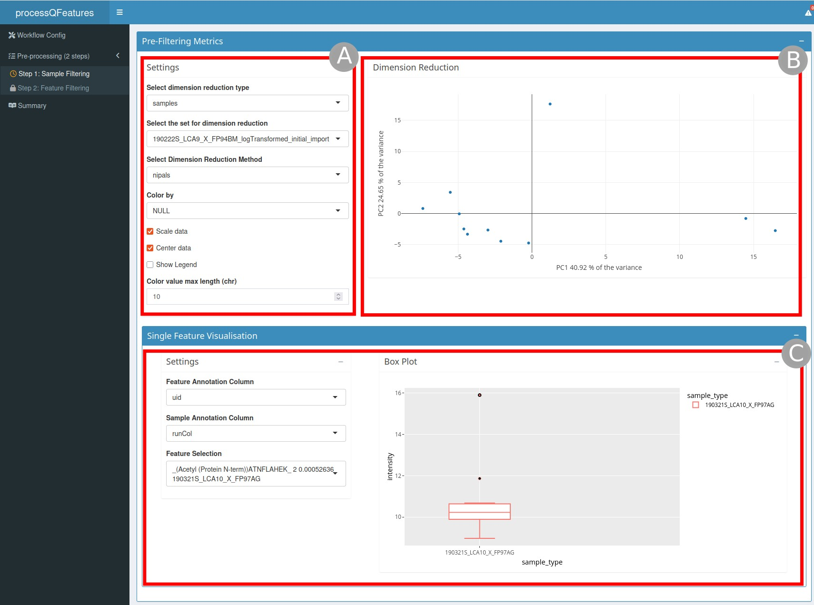
pre-Filtering metrics section
pre-Filtering metrics section (Figure 1) is composed of
two different part :
a dimension reduction graph (
B) on the right and the settings (A) to customize this graph on the left, you can for example choose the dimensionality reduction method or the type of dimensionality reduction.a single feature visualization (
C) where you can display a boxplot of a selected feature split by sample annotation.
Filtering section
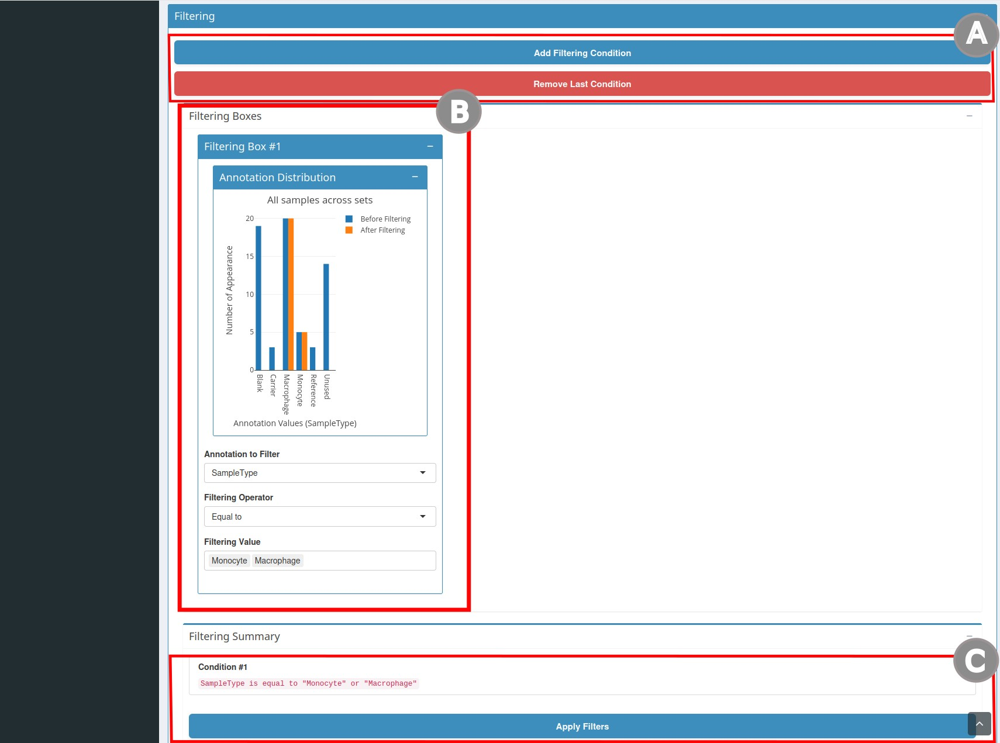
filtering section
- the second section is
Filtering(Figure 2). To create a condition clickAdd Filtering Condition(A). Clicking this button will open thefiltering boxes(B). In this box you can add filtering conditions. Once you have chosen the annotation and the value to filter you will dynamically see the number of cells that will be filtered. You will also find a summary of the selected conditions. Once the filters are chosen clickApply Filters(C). If a condition is unnecessary you can also click onRemove last condition(A).
Post-filtering Metrics section
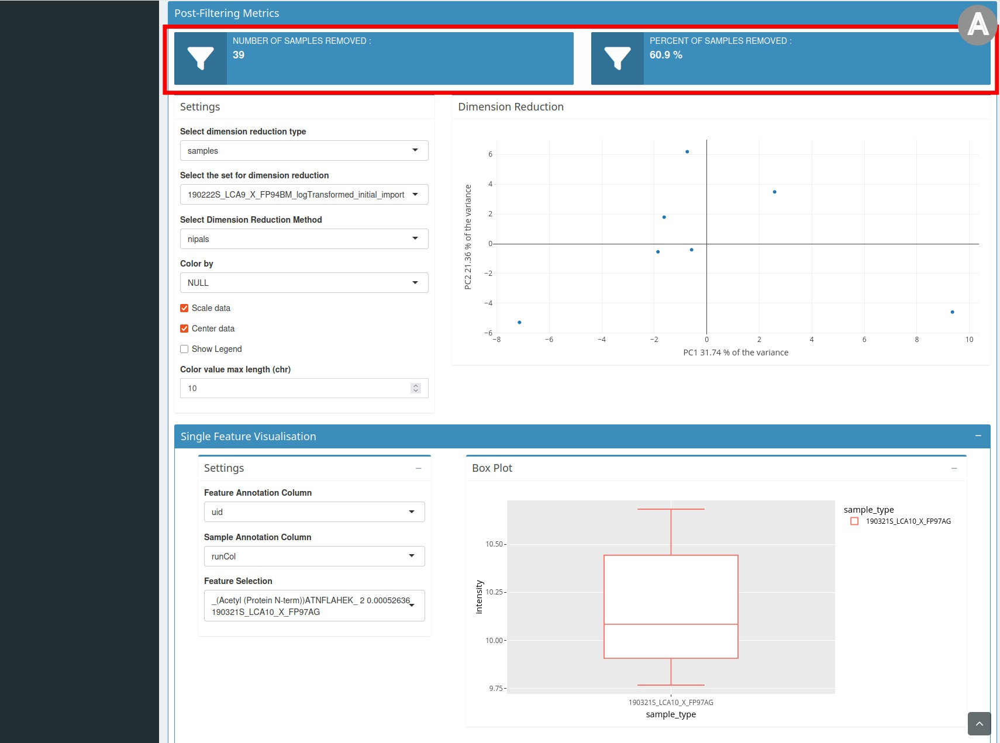
post-Filtering metrics section
- the third section entitled
post-Filtering metrics(Figure 3) repeats the elements of thepre-Filtering metricssection but the graph presents the data after filtering. It also contains statistics on the number and percentage of samples/features removed.
Once the filtering has been done, save the object by clicking the
button Save the processed sets.
Filtering missing values by samples/features
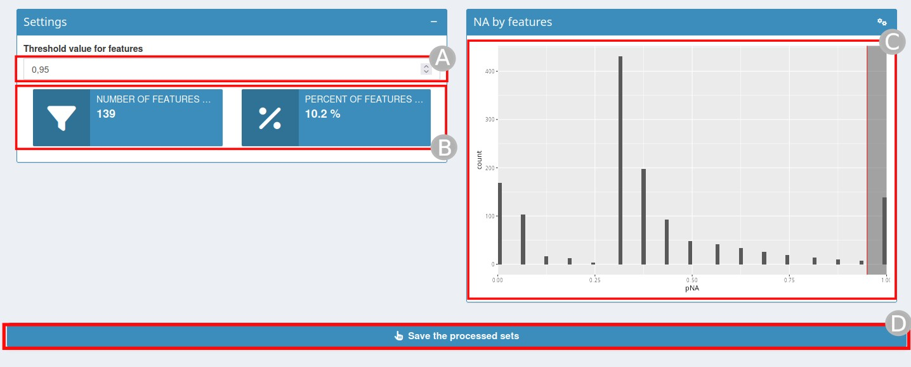
Filtering missing values by samples/features page
Missing values can be very numerous in certain proteomics experiments and need to be dealt with carefully.
In this step you will need to define a threshold for the percentage
of missing value (NA) beyond which a feature/sample should be removed
(A). By changing this value, the statistics relating to the
number and percent of features/samples removed (B) and the
associated graph (C) will be automatically updated. Once
the threshold is defined click on Save the processed sets
(D).
Normalisation
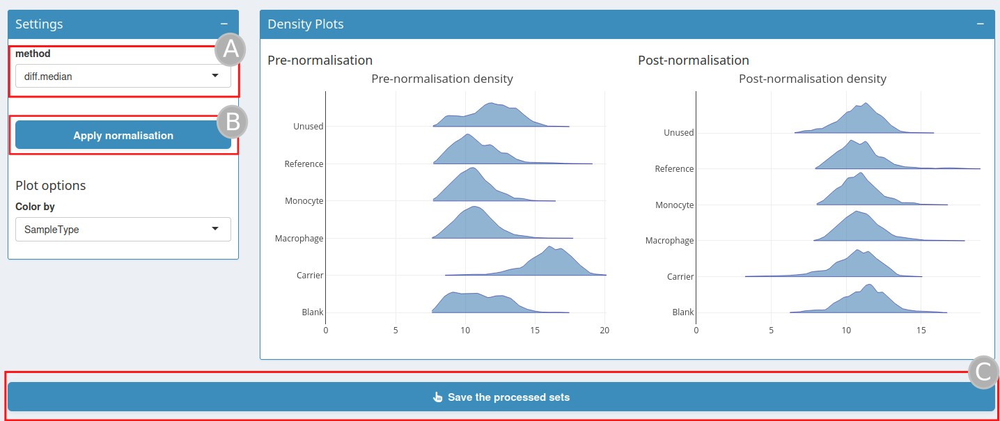
Normalization page
QFeatures object can be normalised on this step. Several
normalization methods are available (A).
sumandmax, where each feature’s intensity is divided by the maximum or the sum of the feature respectively. These two methods are applied along the features (rows).center.meanandcenter.mediancenter the respective sample (column) intensities by substracting the respective column means or medians.div.meananddiv.mediandivide by the column means or medians.diff.mediancenter all samples (columns) so that they all match the grand median by substracting the respective columns medians differences to the grand median.Using
quantilesorquantiles.robustapplies (robust) quantile normalisation, as implemented inpreprocessCore::normalize.quantiles()andpreprocessCore::normalize.quantiles.robust().vsnusesvsn::vsn2()function. Note that the latter also glog-transforms the intensities. See respective manuals for more details and functions arguments.
Once the normalisation method is selected click on
Apply normalisation (B), the density graph
after normalization will be displayed. Click on
Save the processed sets (C).
Zero to NA
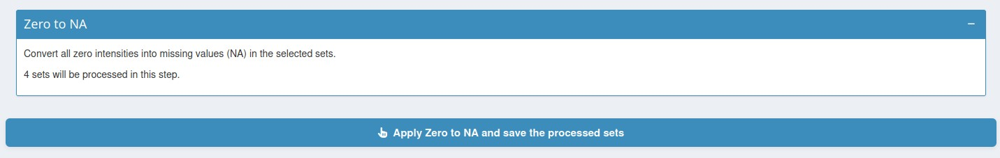
Zero to NA page
This step convert all zero intensities into missing values (NA) in the selected sets.
Log Transformation
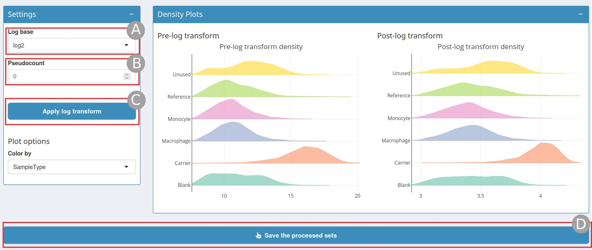
Log transformation page
When analysing continuous data using parametric methods (such as t-test or linear models), it is often necessary to log-transform the data.
The Log base is by default set to log2, but can also be
set to log10 and ln (A), a
pseudocount value can be added (B) to handle zero values in
data before applying logarithm. Then click on
Apply log transform (C), this will display a
density plot post log transformation. Once this is done do not forget to
click on Save the processed sets (D).
Imputation
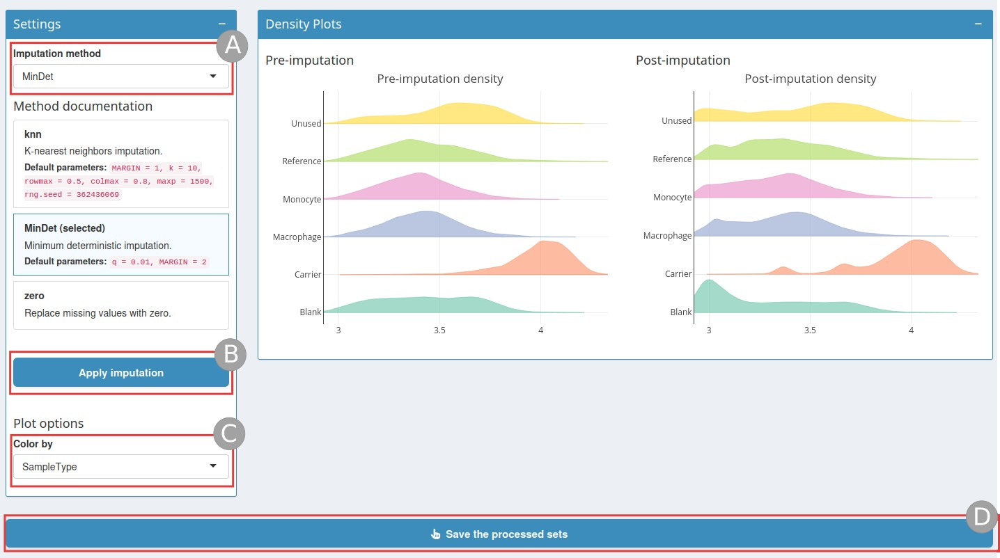
Imputation page
There are two types of mechanisms resulting in missing values in LC/MSMS experiments.
Missing values resulting from absence of detection of a feature, despite ions being present at detectable concentrations. For example in the case of ion suppression or as a results from the stochastic, data-dependant nature of the MS acquisition method. These missing value are expected to be randomly distributed in the data and are defined as missing at random (MAR) or missing completely at random (MCAR)
Biologically relevant missing values, resulting from the absence of the low abundance of ions (below the limit of detection of the instrument). These missing values are not expected to be randomly distributed in the data and are defined as missing not at random (MNAR).
See Imputing quantitative proteomics data for more informations.
First choose an imputation method (A):
knn: Nearest neighbour averaging, as implemented in theimpute::impute.knnfunction. Note that this function is used with default parameters.MinDet: Performs the imputation of left-censored missing data using a deterministic minimal value approach. Considering an expression data withnsamples andpfeatures, for each sample, the missing entries are replaced with a minimal value observed in that sample. The minimal value observed is estimated as being the q-th quantile (default q = 0.01) of the observed values in that sample. Implemented in theimputeLCMD::impute.MinDet. Note that this function is used with default parameters.zero: Replaces the missing values with 0.
Then click on Apply imputation (B), once
the imputation has run the page will display a Post-imputation density
plot which you can color by colData (C). Once the
imputation step is finished, do not forget to
Save the processed sets (D).
Aggregation
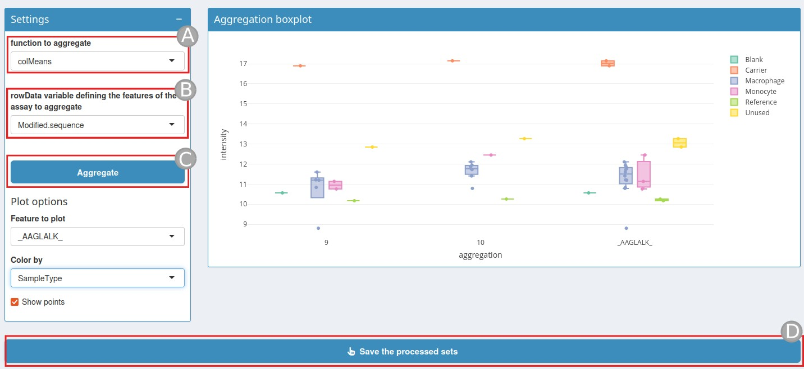
Aggregation page
At this stage, it is possible to use the peptide-level intensities or aggregate the peptide-level data into protein intensities.
To do this, a quantitative feature aggregation function is required.
This function, called function to aggregate
(A) takes a matrix as input and returns a vector of length
equal to ncol(x). The functions can be one of the following
types :
MsCoreUtils::medianPolish()to fits an additive model (two way of decomposition) using Tukey’s median polish_procedure usingstats::medpolish().MsCoreUtils::robustSummaryto calculate a robust aggregation usingMASS::rlm()(default).base::colMeans()to use the mean of each column.matrixStats::colMedians()to use the median of each column.base::colSums()to use the sum of each column.
See MsCoreUtils::aggregate_by_vector() for more
aggregation functions.
A rowData variable (B) is also needed defining how to
aggregate the features of the assays.
Once these two variable has been set click on Aggregate
(C).
An aggregation boxplot will be display. This boxplot shows a feature
color by a value of the colData Once the aggregation is done click on
Save the processed sets.
Join
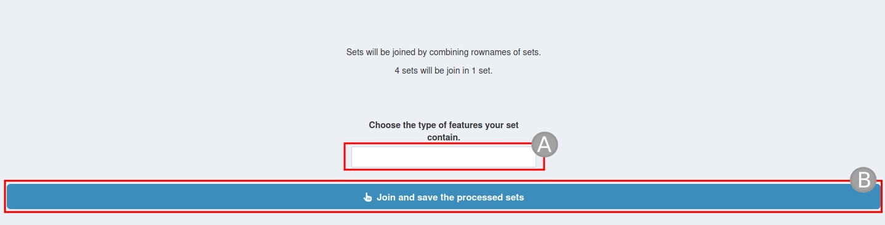
Join page
Join tab will combine the results from the previous step into a
single dataset for further analysis or export. Simply give it a new
assay name (A). Then click
Join and save the processed sets (B).
Summary
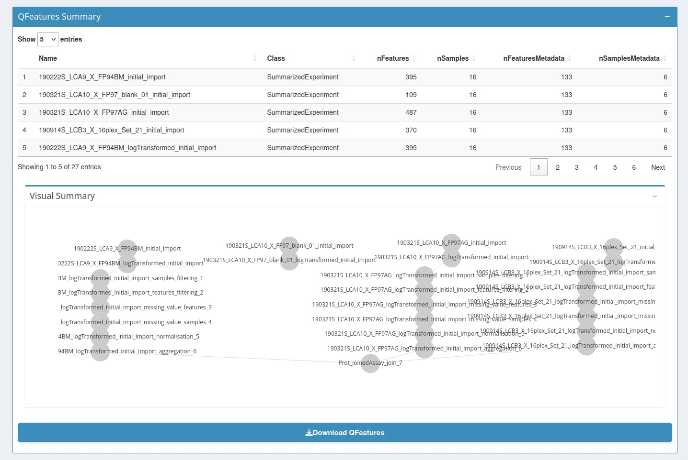
Summary page
The summary page display the various assays present in the QFeatures object and indicates their interrelationships. Finally a download button provide a zip file containing the final QFeatures object the script used to generate it, and the Rsession with the package version.